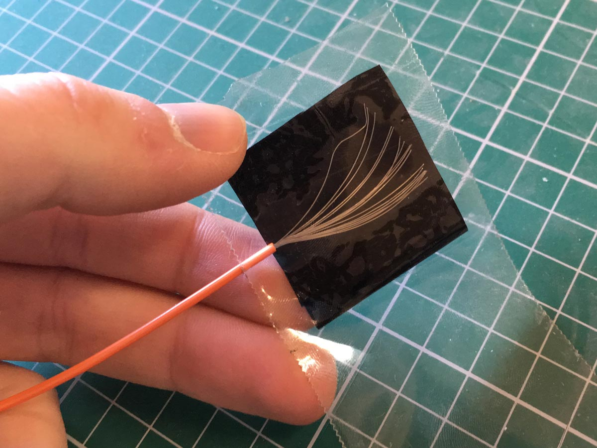

Add an if… else… block, and make it look like this, where “300” should be a number roughly halfway between the two strength numbers you discovered earlier:

Rather than using a breadboard, today we’ll make everything we need from scratch.
We’ll start by making a pressure sensor out of two wires, some sticky tape, and a special carbon-rich fabric called Velostat.
How it works: Velostat is a fabric made out of plastic and carbon dust. Carbon conducts electricity. When you compress the fabric, the carbon dust particles get closer together, and conduct electricity better and better.
Fold your strip of Velostat in three, so it makes a little square.
Fan out one of the exposed ends of one of your loose wires, place it on top of the Velostat square, and seal it with Gorilla tape.
Repeat on the opposite side with the second loose wire.
You’ve made a pressure sensor! Now we need to make the rest of our electrical circuit.
Take your black plastic backing board, and stick a pad of copper tape into each of the four corners.
We’ll refer to these four pads—going clockwise from the top right—as the Ground Pad, Pressure Data Pad, Power Pad, and LED Data Pad.
Find your resistor, and tape it down so that it’s touching the Ground Pad and the Pressure Pad.
Get the two loose ends of your pressure sensor, and tape one onto the Pressure Data Pad, and one onto the Power Pad.
Now find your strip of Neopixels and take a close look at it. The white squares are LEDs.
How many LEDs does your strip have?
Between each LED is a trio of copper terminals, labelled “+5V”, “Din/DO”, and “GND”. These labels line up with the three wires coming out of the top of the strip:
| Label | Wire | What it’s for |
|---|---|---|
+5V |
Red wire | Power |
Din/DO |
Brown wire | Data |
GND |
Black wire | Ground |
Tape the wires from your LED strip onto the corresponding pads on your circuit board:
Finally, connect your circuit board up to your microbit, with crocodile clip wires.
Because you’ve hand-made your own pressure sensor, the values it returns might be different to everyone else’s.
Before we can use the pressure sensor to control the LED strip, we need to get an idea of how much electricity passes through the sensor when it’s being pressed, and when it’s not being pressed.
Start a new project at makecode.microbit.org.
Drag some on button A pressed, show number, and analog read pin blocks in, as shown below:
Make sure you have set analog read pin to “P1”, because that’s the pin that your Pressure Data Pad (and the pressure sensor) are connected to.
Download the code onto your microbit, and try pressing Button A while applying different levels of pressure to the pressure sensor.
Make a note of these two numbers. The first number (not pressed) should be somewhere around 0–200, and the second number (pressed hard) should be around 400–600.
Let’s use those numbers to turn the lights on when you press the sensor.
Make a new variable called neopixel_strip.
Drag a set item to block into your on start block, and change the item dropdown to neopixel_strip.
To control our strip of LEDs, we need to import the Neopixel block package. In the sidebar, click “Advanced” and then “Add Package”.
Click on the “neopixel” package, to add it to your project.
Find the new Neopixel blocks in the sidebar, and drag the Neopixel at pin… block onto the end of your neopixel_strip variable assignment.
Make sure the pin is set to “P0”, because that’s the pin your LED Data Pad (and the data wire from the LED strip) are connected to.
Also, remember to change the number “24” to the number of LEDs that are on your LED strip.
Drag a pause (ms) 100 block into the start of your forever loop.
Make a new variable called pressure.
Add a set item to block to your forever loop, and change the item dropdown to pressure.
Find another analog read pin block, clip it into the end of your set pressure to block, and change the pin number from “P0” to “P1”.
Add an if… else… block, and make it look like this, where “300” should be a number roughly halfway between the two strength numbers you discovered earlier:
Add two show color Neopixel blocks to your code, and pick two different colours for the two options. (Red and green are a good combination!)
Download the code to your microbit, and try pressing and releasing the pressure sensor. What happens?
Your pressure sensor is quite sensitive! It can differentiate between a very soft touch, a super hard press, and everything between.
Rather than just switching between two colours, let’s change our code so that it cycles through a colour rainbow, based on how hard you press.
Remove the whole if… else… block, and everything inside it.
In its place, put a show color block from the Neopixel drawer. Remember to change the item dropdown to neopixel_strip:
Replace the red variable in your show color block with a hue… saturation… luminosity… block from the Neopixel drawer.
Set the “hue” value to a pressure variable block. And set the “saturation” to 99, and the “luminosity” to 50.
Download the code to your microbit, and try it out. What happens when you slowly increase the pressure on the pressure pad?
Funfairs and carnivals often have a “Strength tester” or “High striker” game where you hit a lever with a big hammer, and a puck shoots up a tower and rings a bell, or lights shoot up, showing you how strong you are.
Can you use the following blocks to build a “strength tester” like that?
Tip: When no pressure is being applied to the sensor, all of the LEDs should be off. But as you apply more and more pressure, the LEDs should light up one by one, until, at your strongest, all of the LEDs are lit.